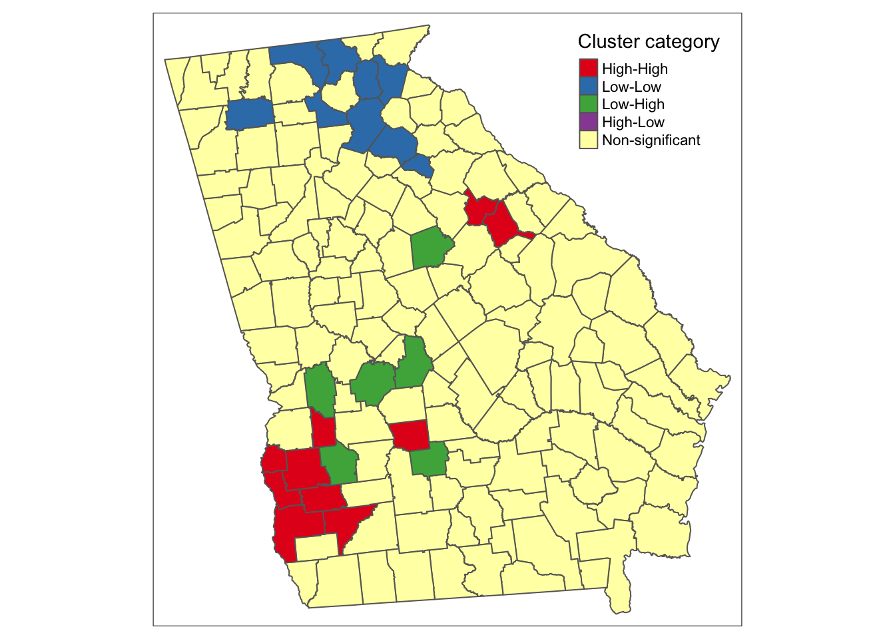

Week 8 Spatial Structure and Clustering I: Moran’s I and LISA
8.1 Getting Ready
8.1.1 Learning objectives
| After this module you should be able to… |
|---|
| Compare and contrast the statistical, epidemiologic, and policy meaning of geospatial 'clustering' of disease |
| Calculate and visually summarize global and local tests for spatial clustering |
8.1.2 Additional Resources
- Waller L, Gotway C. Applied Spatial Statistics for Public Health Data. Hoboken, NJ: John Wiley & Sons, Inc; 2004. (Available electronically via library)
8.1.3 Important Vocabulary
| Term | Definition |
|---|---|
| 1st order process | Statistical measures where units taken one at a time. Spatial heterogeneity is about how the mean intensity varies for each unit, and is therefore primarily about first order process |
| 2nd order process | Statistical measures where units considered at least two at a time. Spatial dependence is about correlation or relatedness between units and is therefore about 2nd order processes |
| Spatial dependence | When attribute values or statistical parameters are, on avreage, more similar for nearby places than they are for distant places. Spatial dependence is evaluated by looking at pairs or sets of places. |
| Spatial dependence: Focal | Evaluation of clustering or dependence of events or values in a specific focal area, typically defined in relation to a putative hazard |
| Spatial dependence: Global | Evaluation of whether, on average, there is spatial independence (null) or spatial dependence (alternative) in a dataset. A global test returns a single test statistic for the entire dataset |
| Spatial dependence: Local | Evaluation of place-specific dependence by comparing, for each region, the correlation between the index value and the value of the neighbors. Local tests result in a stest statistic for each and every region |
| Spatial heterogeneity | Attributes or statistical parameters are varied (e.g. not homogenous) across sub-areas in a broader region. In Disease mapping we typically are evaluating whether (and how much) disease intensity (risk, rate, prevalence) varies across places. |
8.2 Spatial Thinking in Epidemiology
The notion of clusters of disease as a fundamental clue for epidemiologists harkens back to John Snow’s Cholera map, where the appearance of excess cases near the Broad Street pump pointed to an effective intervention, even in the absence of etiologic knowledge about causation. In other words, the appeal of cluster analysis is that we can identify patterns that potentially inform action.
Of course ‘clustering’ or grouping of health status in one group compared to another is the basis for all associational or etiologic epidemiology. We are interested in whether disease occurs more or less often in one group versus another (e.g. exposed versus unexposed). We could say that lung cancer clusters among smokers, especially as compared to non-smokers.
So it is natural to extend this idea to an explicitly spatial frame, since we often find populations in geographically-referenced groups share or spread exposures and resources that affect the health of those populations.
8.2.1 Two big questions…
In spatial epidemiology most questions boil down to two fundamental questions and their related broad hypotheses:
- Is the health of population (measured as risk, rate, prevalence, etc) spatially homogenous or constant (\(H_o\) hypothesis), or is health spatially heterogeneous or variable (\(H_a\) hypothesis)?
- Are the occurrences of health events, or the value of health parameters spatially independent (\(H_o\) hypothesis) or are the events or values spatially dependent or clustered in space, given variation in the population at risk (\(H_a\) hypothesis)?
The first question has been the driving question for disease mapping, and in fact if there were complete disease homogeneity or constant risk, spatial epidemiology would not be a fruitful endeavor. But as we saw over the past several weeks, the question of homogeneity versus heterogeneity is not so simple. For instance we had several concerns which drove many of the statistical methods learned to date:
- True heterogeneity versus spurious heterogeneity arising from statistical imprecision and instability due to small numbers (e.g. either very rare outcomes producing small numerators, or small populations producing small denominators).
- Statistical disease mapping strategies including Empirical Bayes, Full Bayes modeling, and kernel density estimation
- Meaningful heterogeneity versus heterogeneity driven by spurious or nuisance factors including confounding by other factors
- Standardizing expected counts or rates to the distribution of a covariate (e.g. age) is one strategy for addressing this spurious or nuisance patterning
- Biased estimates of spatial risk patterns derived from the spatial scale (e.g. size of aggregating units) and spatial zoning (e.g. particular arbitrary boundaries used), as described in the modifiable areal unit problem (MAUP).
- The best strategy to avoid MAUP related bias is to rely on meaningful units of analysis. In the absence of clearly meaningful aggregation approaches, comparing sensitivity of results to alternate scale or zoning is useful
The second question is seemingly similarly straightforward, but upon further investigation shares as many or more caveats and concerns as seen above. On the surface there are numerous statistical tests designed to detect clusters of events, or the presence of spatial autocorrelation of continuous value. However reliable and valid detection of epidemiologically meaningful spatial clusters is threatened by all of the above concerns (e.g. instability due to sparse data; spurious patterns due to nuisance factors), as well as several specific to spatial dependence testing including:
- Defining a meaningful alternative hypothesis, including the specification of spatial weights or neighbors appropriate to the process at hand
- Multiple comparisons implicit in any local test of dependence or autocorrelation
- Conceptualizing the underlying process as a function of the spatial scale (e.g. is a ‘cluster’ due to diffusion or spread from one region to another, or is it because all the measured regions share the same exposure?)
8.2.2 Why does structure or clustering matter?
The spectrum of epidemiologic investigation spans from purely descriptive activities on one end to purely etiologic and causal on the other. In the middle is a great deal of room for hypothesis generating, predictive analyses, and applied cluster analysis as part of disease response. Disease mapping can serve both descriptive and hypothesis generating purposes. Formal spatial cluster analysis is employed for the following reasons:
- Exploratory cluster detection and descriptive analysis of disease risk/rate variation when this has not already been established. This can be a crude tool for generating hypotheses about risk factors for health.
-
Public health response to outbreak or cluster concern raised from citizen complaints, or surveillance. This includes efforts to definitively identify clusters of disease such as cancer, birth defects, or geographically-limited infectious disease outbreaks.
- Advancing etiologic and population health knowledge by testing for excess geographic variation above and beyond that explained by known risk factors. This can suggest novel spatially-patterned risk factors, unmeasured confounding, spatial selection processes, or complex spatially-referenced interactions.
For health outcomes that vary over time and space, it is possible that there is clustering of health events in space, during specific time periods, and possibly in both dimensions simultaneously.
Therefore, spatial cluster analysis is but one tool in the broader epidemiologic process of understanding the biological, behavioral, and social production of population health, and by extension of acting to promote health and prevent disease. The bottom line from an epidemiologic (or population health) perspective, is that the wide variety of sophisticated statistical tools can, when appropriately used, advance our insight and knowledge but do not on their own substitute for the critical thinking and triangulation necessary for robust and impactful epidemiologic understanding.
8.2.3 Making meaning of hypotheses in spatial structure testing
To make meaningful inference about spatial structure and the presence, absence, location, and magnitude of spatial clusters in health parameters, it is critical to have clarity about the question being asked, and the implied null and alternative hypotheses.
As a starting point, there are three broad categories for testing for the presence of spatial clustering or dependence:
- Global dependence refers to a single test statistic summarizing a pattern evident across the entire dataset. Below, the global Moran’s I statistic is one example of such an approach. Such tests are especially useful when comparing ‘models’ that aim to explain spatial patterns; changes in the strength of global autocorrelation across competing approaches can provide clues about the drivers or generators of dependence in the data
- Local dependence is a search for the existence of sub-regions in the study area that are more clustered or auto correlated than expected by chance alone. While a global test returns only a single value of a test statistic, local tests of clustering return a separate test statistic for each unit of analysis. This strategy can be useful to identify unusual patterns where high or low rates group together; by extension searches for local dependence generate hypotheses about explanations for disease variation in populations
- Focal clustering is a targeted search for excess risk of disease in a pre-defined region. Typically a focal test is defined in relation to a putative hazard, such as a toxic emitter.
To effectively conduct a meaningful cluster analysis, Waller & Jacquez (1995) suggest a framework for thinking about components of statistical testing for clustering in spatial epidemiology.
Statistically we can define null hypotheses which describe expectations of spatial patterns of points or aggregated risks/rates assuming either spatially constant risk (spatial homogeneity in intensity) or spatial independence (spatially random distribution of values across units). We then test our data for evidence that our observed data departs from the expectations under the null.
Epidemiologically, the questions best-suited for spatial cluster analysis concern the presence of, and ultimately the reasons for, epidemiologically unusual spatial patterns of disease occurrence. So, what makes a pattern epidemiologically unusual or interesting? In other words when might a statistical test be significant but not helpful, at least from the point of view epidemiologic investigation?
One challenge is that cluster testing strategies tend to be calibrated to identify a particular cluster morphology, but clusters can occur in variety of shapes, sizes, or intensities. For example some detect boundaries (e.g. zones of rapid change; or boundary overlap between exposure and outcome), other detect outliers, and some use neighbors, circles or ellipses to define the index sub-regions for evaluation. The two cluster statistics we will introduce this week rely on a ‘template’ of clustering defined by the choice of the unit of analysis (e.g. the specific scale or zoning at which data are aggregated) and the definition of the neighbors.
As we move forward, there are some additional concepts that are worth defining more fully:
| Feature | Description |
|---|---|
| Null hypothesis | A statement about what disease pattern is expected in the absence of clustering. A constant risk hypothesis from disease mapping is one example, but spatial independence is another. |
| Null spatial model | This can be theoretical or computational. Theoretical models include assumptions about parametric probability distributions for how data are generated under the null. For example asymptotic Gaussian or Poisson independent distributions. However, because large samples are rare and real world data may not follow parametric forms, computational strategies for describing the null can be used. These include the permutation testing we’ve seen in previous weeks. |
| Alternative hypothesis | While our alternative to the constant risk hypothesis was simply that risk was heterogeneous (an omnibus rejection of the null), for spatial dependence the alternative is shaped by the choice of spatial neighbors or spatial weights. Each neighbor specification represents a slightly different alternative hypothesis. |
| Cluster statistic | There are numerous cluster statistics including the Moran’s I statistic and the Local Moran’s LISA statistic; we will discuss two this week and a couple next week, but many more exist. |
Distribution of the cluster statistic under the null spatial model Just as we needed a null spatial model that was theoretical or computational, we also need to characterize the distribution of the cluster statistic under the null in order to compare with the observed data
8.3 Spatial Analysis in Epidemiology
The choice of cluster statistic depends greatly on the nature of the spatial data and parameters of interest. For example different strategies would be used if data were point referenced versus aggregated into areal units, and differences if the parameter or statistic of interest is naturally a continuous value which might be conceived of as normally distributed versus a numerator and denominator pairing representing a Poisson rate.
In this section we will introduce the Global and Local Moran’s I statistics for clustering of very low birthweight in Georgia counties. Moran’s I typically makes sense with areal data. While originally developed for normally distributed data, extensions to Poisson distributed data are available.
8.3.1 Packages & Data
In addition to the familiar packages, we will use packages with specific cluster statistics including DCluster and spdep have functions relevant for spatial cluster analysis.
pacman::p_load(tidyverse, # Provides data manipulation and piping functionality
sf, # Read/write spatial data
spdep, # Functions for creating spatial weight, spatial analysis
DCluster, # Package with functions for spatial cluster analysis
tmap) # Mapping functionalityIn terms of data, we will continue to use the Georgia very low birth weight (VLBW) data, with counts aggregated to the scale of county.
8.3.2 Global Moran’s I
There are numerous tests of global spatial auto-correlation including Geary’s \(C\) test, the Getis-Ord \(G^*\) statistic and others. We will focus on the most commonly used, the Moran’s I statistic. As discussed in the lectures, the Moran’s I statistic is similar to a Pearson’s correlation coefficient, in that it takes the product of differences of two measures from their respective mean to quantify dependence or similarity. In the case of Pearson’s correlation coefficient, the two measures (e.g. \(x,y\)) are of two constructs (e.g. one variable, \(x\) and a second variable, \(y\)). However in the case of Moran’s I, the two measures are of the same construct but contrast the index county (e.g. \(x_i\)), as compared to the average value of that county’s neighbors (e.g. \(w_{ij}x_j\) where \(w_{ij}=1\) for regions that are neighbors, and \(w_{ij}=0\) otherwise. Thus, the spatial weights matrix \(w_{ij}\) encodes the spatial relationships between places.
This is the Moran’s I statistic:
\[I=\frac{\sum\limits_{i=1}^{n} \sum\limits_{j=1}^{n} w_{ij} (Y_i-\bar Y)(Y_j-\bar Y)}{ \sum\limits_{i=1}^{n} \sum\limits_{j=1}^{n} w_{ij}} \left( \frac{1}{\frac{1}{n} \sum\limits_{i=1}^{n} (Y_i-\bar Y)^2} \right)\]
In the formula \(i\) references the count of regions from \(1:n\), the weights matrix, \(w_{ij}\) represents the relatedness for pairs of regions. For example, if regions are neighbors, the weight is \(1\), if not the weight is \(0\). \(\bar Y\) is the mean value of the parameter.
Global Moran’s I considers values observed in pairs. If adjacent pairs are simultaneously above (or simultaneously below) average, it contributes to positive value of test statistic. If one region is above average and the other is below, that contributes to a negative value (e.g. opposites or an inverse correlation).
The null hypothesis of the Moran’s I is that measures are spatially independent, and in this setting the test statistic would be zero. However if there is positive spatial autocorrelation, the test statistic will be positive (but generally not greater than 1), and suggestive that neighboring counties are more similar than distant counties. In unusual circumstances, the Moran’s I test statistic can be negative (e.g. when index county is opposite all of its neighbors).
REMEMBER:
The null assumption of spatial independence does not imply that there is spatial homogeneity or a constant risk. There can be very different rates between counties and still have spatial independence. Rejecting the null of spatial independence suggests that the high and low rate regions have a particular spatial pattern or structure.
First we will set up a spatial weights matrix to represent a starting alternative hypothesis defined by local spatial relationships. Only a Queen contiguity relationship is specified here, although other definitions would represent additional alternative hypotheses as to the assumption of spatial independence. Notice that for this function, we need the neighbor object (of class nb) to be converted to another format called a neighborhood list with spatial weights (e.g. class listw).
8.3.2.1 Global Moran’s I for normally distributed variable
There are many kinds of measures of variables on which you might choose to carry out spatial auto-correlation analysis. For example, measures of epidemiologic exposures (access to care, environmental toxicants, built environment) might be represented as continuous, normally distributed values. In the spatial regression module we will discuss the assessment of spatial autocorrelation in multivariable regression model residuals as another use (e.g. to diagnose residual spatially-structured errors); these would also be expected to be normally distributed.
The following function, moran.test(), is from the package spdep, and takes a single continuous value. In our case where the parameter of interest is a risk, this first version of the Moran’s I statistic treats each observed risk value as equal, without considering the differences in sample size among counties.
The function allows consideration of either a theoretical null spatial model (e.g. assumes the variance of \(I\) statistic is consistent with an asymptotic normal distribution specified by the options randomization = FALSE), or for the null spatial model to be computational (e.g. assume variance of the \(I\) statistic is not normal, and will be empirically approximated through random permutations). Below we specify the computational null by indicating randomisation = TRUE. You can read more about the arguments and information returned by this function by looking at the document help.
moran.test(vlbw$rate,
listw = q_listw,
randomisation = T)##
## Moran I test under randomisation
##
## data: vlbw$rate
## weights: q_listw
##
## Moran I statistic standard deviate = 4.5281, p-value = 2.975e-06
## alternative hypothesis: greater
## sample estimates:
## Moran I statistic Expectation Variance
## 0.214197175 -0.006329114 0.002371817The Moran’s I statistic of \(0.21\), with a very small p-value suggests that there is evidence of moderate spatial autocorrelation, and that this result is highly statistically significant.
To visualize how the mortality rate for each county compares to each county’s neighbors we can use moran.plot().
moran.plot(x = vlbw$rate,
listw = q_listw,
labels = vlbw$NAME,
xlab = 'VLBW Risk',
ylab = 'Spatially-lagged mean risk')This plot demonstrates the correlation or relationship between each county’s VLBW risk (x-axis) against the average of the risk for that county’s spatial neighbors (y-axis; assuming Queen contiguity). The dotted lines divide the plot into quadrants representing above and below the mean value of both the rate, and the spatially-lagged rates of neighbors. The solid line is the slope of correlation (it corresponds to the 0.21).
Thinking about each quadrant in turn can help make sense of this plot, and of the interpretation of the spatial autocorrelation statistic. For example, look at Randolph county (labeled in the upper-right quadrant). This county is characterized by having higher than average VLBW risk than the state (e.g. it is to the right side of average on the x-axis), and also the average VLBW risk among Randolph county’s Queen contiguity neighbors is higher than average (e.g. it is above the average on the y-axis).
While none are labeled, there are also counties in the left lower quadrant. These points represent individual counties with lower than average risk of VLBW, surrounded by neighboring counties that also have lower (on average) risk.
Finally there are some points in the ‘off-diagonal’ quadrants: in the upper-left are counties where their own risk is lower than average (e.g. small values on the x-axis), but they are surrounded by counties that have (on average) higher than average risk (e.g. large values on the y-axis).
While these are clues about where clustering occurs, remember that the global Moran’s I provides us with only one statistical test value for the entire state of Georgia. So the question being asked is: “Is there spatial autocorrelation in VLBW risk in Georgia” and the answer to the question is “Most likely, yes”. However this test did not explicitly quantify the likelihood of any specific location where those clusters might be.
8.3.2.2 Global Moran’s I for Poisson-distributed rate data
While many measures may be appropriately assessed under the normality assumptions of the previous Global Moran’s I, in general disease rates are not best assessed this way. This is because the rates themselves may not be normally distributed, but also because the variance of each rate likely differs because of different size population at risk. For example the previous test assumed that we had the same level of certainty about the rate in each county, when in fact some counties have very sparse data (with high variance) and others have adequate data (with relatively lower variance).
In short, that is one reason we do not use Gaussian assumptions in analyzing health data, instead using binomial, Poisson, and other distributions to model disease occurrence. Luckily, there are extensions of the global Moran’s I that treat our measures as Poisson (or negative binomial) rather than normal.
The package DCluster has several wrapper functions which work with the moran.test() function in spdep but accommodate these alterations. As usual, it would be wise to use ?moranI.test() to look at the help documentation for further detail.
Note, the addition of arguments n=159 and S0 = Szero(q_listw) are now required for this function. The n= argument specifies the number of regions, whereas the S0 = argument calculates the global sum of weights. More specifically the helper function Szero() calculates several constants that are needed by various autocorrelation statistics calculations.
Also note that instead of using the calculated rate, we specify the county of the outcome and the log(expected) as an offset. We can also specify the number of random simulations of the null hypothesis to run in order to calculate the empirically p-value.
moranI.test(VLBW ~ offset(log(expected)),
data = vlbw,
model = 'poisson',
R = 499,
listw = q_listw,
n = 159,
S0 = Szero(q_listw))## Moran's I test of spatial autocorrelation
##
## Type of boots.: parametric
## Model used when sampling: Poisson
## Number of simulations: 499
## Statistic: 0.2141972
## p-value : 0.002Not surprisingly, the Moran’s I statistic itself is virtually identical to what we got in the previous example (\(I=0.21\)). While the empirical p-value of \(p=0.002\) is still significant at \(\alpha = 0.05\), it is substantially larger than the p-value calculated by the Moran’s I test run under the assumption of normality. This reflects the variation in precision among counties, that is now at least partially being accounted for.
8.3.2.3 Global Moran’s I after Empirical Bayes smoothing
Given the concern for a relatively rare outcome, and few births in some counties, we might also be concerned about whether the rates are being well-estimated. While the moranI.test() function above helped address the unequal variance resulting from sparse as compared with populous counties, it did not directly address the reliability of the estimate. However it is possible to combine the disease mapping tool Empirical Bayes smoothing with the Moran’s I statistic to get a more reliable estimate of global spatial auto-correlation. The EBImoran.mc() function from the spdep package does this for us.
ebm <- EBImoran.mc(n = vlbw$VLBW,
x = vlbw$TOT,
listw = q_listw,
nsim = 499)
print(ebm)##
## Monte-Carlo simulation of Empirical Bayes Index (mean subtracted)
##
## data: cases: vlbw$VLBW, risk population: vlbw$TOT
## weights: q_listw
## number of simulations + 1: 500
##
## statistic = 0.20882, observed rank = 500, p-value = 0.002
## alternative hypothesis: greaterIn this case, the Moran’s I statistic remains similar, again adding confidence to our belief that this test value is not simply a function of extreme outliers due to sparse data. As mentioned above, the relatively larger p-value could derive from the (more appropriate) use of Poisson rather than Gaussian distribution, but also from the limits of precision from the permutation empirical p-values as compared with asymptotic p-values.
8.3.3 Local Moran’s I
Once again, the interest and importance of global tests of spatial autocorrelation are in describing the overall structure of a spatial dataset, or in diagnosing or confirming underlying assumptions (e.g. the assumption of spatial independence). However the identification (and mapping) of specific local clusters of regions that represent hot spots (grouped-areas of high risk) or cold spots (grouped-areas of low risk) is often a motivation for spatial cluster analysis; this is the purview of local tests of spatial auto-correlation.
The Local Moran’s I is simply a decomposition of the global test into the individual values that are part of the summation. Unfortunately, there are many more caveats when it comes to using these Local Indicators of Spatial Association (LISA) statistics.
\[I_i = \frac{(Y_i-\bar Y)}{\sum\limits_{j=1}^{n}(Y_j-\bar Y)^2 / (n-1)} \sum\limits_{j=1}^{n}w_{ij}(Y_j-\bar Y)\]
This formula is simply the specification of an \(I\) statistic for each sub-region in the study area. Together, all of the \(I_i\) sum to \(I\). However, there are a few additional wrinkles when we break the overall \(I\) statistic into sub-parts.
- First, in the global tests, our parametric assumptions for the variance are plausible, assuming we have a reasonably large number of regions (e.g. we have n=159). However for local test, we want to make inference separately about each region (county in this example), and in that case we are trying to test whether 1 county is correlated with its handful of neighbors. In other words, the N is quite small for each test, making asymptotic (e.g. ‘large-number’) tests invalid.
- In addition, we are testing each county in turn, raising concerns for multiple comparisons and corresponding Type I error (e.g. whether we have false positives in terms of statistical significance).
One thing to keep in mind is that LISA statistics are often selected to identify where disease clusters. The p-value is a null-hypothesis statistical test of whether the clustering is sufficiently unusual to be called significant. The most efficient way to test for whether there is clustering is with global tests; the use of local tests should therefore be seen in the light of descriptive and exploratory, although as we shall see, there are adjustments for multiple comparisons to reduce concern for Type I error.
8.3.3.1 Local Moran’s I - localmoran()
The first approach is to use the basic localmoran() function in spdep. This method treats the variable of interest as if it were a normally distributed continuous variable; that would be reasonable for some exposure or covariate measures, and in some cases could be reasonable for disease rates if the values have relatively similar levels of variance (e.g. all regions have sufficiently large population sizes).
A previous version of spdep had a built-in option to calculate multiple comparison corrections of the local moran’s I. In the current version, that function was removed from localmoran(), but you can still do it by looking at the help documentation for the function ?p.adjustSP.
lm1 <- localmoran(x = vlbw$rate,
listw = q_listw)
dim(lm1) # dimensions of object returned## [1] 159 5
summary(lm1) # summary of object returned## Ii E.Ii Var.Ii Z.Ii
## Min. :-1.55827 Min. :-0.09571301 Min. :0.0000016 Min. :-2.8908
## 1st Qu.:-0.03078 1st Qu.:-0.00651091 1st Qu.:0.0120165 1st Qu.:-0.3002
## Median : 0.06534 Median :-0.00204478 Median :0.0656044 Median : 0.4763
## Mean : 0.21420 Mean :-0.00632911 Mean :0.1805685 Mean : 0.4952
## 3rd Qu.: 0.34255 3rd Qu.:-0.00047898 3rd Qu.:0.1983378 3rd Qu.: 1.2909
## Max. : 2.69958 Max. :-0.00000003 Max. :2.6484359 Max. : 4.5459
## Pr(z != E(Ii))
## Min. :0.0000055
## 1st Qu.:0.1376159
## Median :0.3463825
## Mean :0.4130179
## 3rd Qu.:0.7236363
## Max. :0.9972931The contents returned by the localmoran() function is a matrix with five columns with separate values for each of \(n=159\) rows (representing counties in our data).
-
Iiis the local Moran’s I test statistic.
-
E.Iiis the expected value of the Moran’s I statistic under the null. Note all values are the same, and are very close to zero. -
Var.Iiis the variance of each local Moran’s I statistic. -
Z.Iiis the standardized deviation (e.g. ‘z-score’) of the local Moran’s I statistic -
Pr(Z>0)is the p-value (in this case adjusted for multiple comparison using the false discovery rate method).
8.3.3.2 Plotting a Cluster Map
There are many options for visualizing the results including plotting the Local Moran’s I statistic value \(I_i\) for each county, mapping the p-value, or a combination. However a common approach implemented in the free GeoDa software, and adopted in the ESRI ArcGIS software is to produce a map representing each county with respect to the four quadrants of Moran’s plot.
FIGURE 8.1: LISA scatterplot typology
- High-High are regions with statistically significant positive values for the local \(I_i\) statistic, and higher-than-average rates in both index regions and their neighbors
- Low-Low are regions with statistically significant positive values for the local \(I_i\) statistic (because positive values of \(I_i\) represent similar values, whether similarly high or similarly low), and lower-than-average rates in both index regions and their neighbors
- High-Low are regions with statistically significant negative values for the local \(I_i\) statistic (because \(I_i\) is negative when the index and neighbors are inversely related), with the index region having higher-than-average rates, and the neighbors having lower-than-average rates
- Low-High are counties with statistically significant negative values for the local \(I_i\) statistic, with the index county having lower-than-average rates, and the neighbors having higher-than-average rates
- Non-significant all regions with non-significant values for the \(I_i\) statistic are symbolized in a neutral color.
In practice, we can simply use the p-value from the localmoran() test to identify specific regions that are statistically significantly different from expectations under the null. Then among these ‘significant’ regions we can assign them to a quadrant based on two aspects of the risk or rate:
- The standardized (e.g. z-score value) of the VLBW
ratein each county - The weighed average of the standardized
ratefor each county’s neighbors, where the weights are a function of neighbor definition. The functionlag.listw()does the computation for us; it accepts a vector of measures plus alistwclass description of the neighbors. It returns a vector of the ‘spatially lagged’ or averaged values of the variable of interest.
What is a spatial lag?
In prior examples we have used spatial neighbor definitions to create a spatial weights matrix. That weights matrix used a form of spatial lag or incorporation of information from adjacent units to compare to the index unit.
In this example, the lag.listw() simply gives us the tools to spatially lag any variable of interest. Specifically, the use below goes county by county, and for each index region, uses the spatial weights to calculate the average of all neighbors for that region. That is useful now because we are using information on both the rate in the index county and the rate in the neighbors to assign quadrants.
In future examples we could use the lag.listw() function to test whether the exposure in neighboring regions is correlated with the outcome in the index county, a question of spatial diffusion.
# For convenience, give an easier name to the 5th column, representing p-value
names(lm1)[5] <- 'pvalue'
# create lagged local raw_rate - in other words the average of the queen neighbors value
vlbw$lag <- lag.listw(q_listw, var = vlbw$rate)
vlbw$lm_pv <- lm1[,5]
# Create a new dataset that includes standardized values, and then creates a new variable
# 'lm_quad' which takes on the above categorical values.
vlbw_lm <- vlbw %>%
mutate(raw_std = as.numeric(scale(rate)), # scale means standardize to mean 0, 1 SD
lag_std = as.numeric(scale(lag)),
lm_quad = factor(case_when( # All of this is assigning labels based on values
raw_std >= 0 & lag_std >= 0 & lm_pv < 0.05 ~ 'High-High',
raw_std <= 0 & lag_std <= 0 & lm_pv < 0.05 ~ 'Low-Low',
raw_std <= 0 & lag_std >= 0 & lm_pv < 0.05 ~ 'Low-High',
raw_std >= 0 & lag_std <= 0 & lm_pv < 0.05 ~ 'High-Low',
lm_pv >= 0.05 ~ 'Non-significant'),
levels = c('High-High','Low-Low','Low-High','High-Low','Non-significant')))To summarize, the code above accomplished the following steps:
- Assign a new column to our
vlbwdataset namedlag. This variable (produced withlag.listw()function) is the average VLBW prevalence in the neighbors (defined by Queen contiguity in this case) of each county - Assign a new column to our
vlbwdatasets namedlm_pv(for local moran’s p-value). This is done so all the needed information is in one object, thevlbwdata set. - Within the chained series of
dplyrsteps that produce our new data object,vlbw_lm, the following steps occur:- Standardize the raw rate so that zero is the mean value and each unit represents one standard deviation
- Standardize the spatially lagged rate
- Recode every county according to three factors: i) is the VLBW risk in the county larger or smaller than average (e.g. higher or lower than zero)?; ii) is the VLBW risk among the spatial neighbors of the county larger or smaller than average?; and iii) is the local Moran’s I test statistic significant at \(\alpha = 0.05\) after adjusting for multiple comparisons with the false discovery rate method?
- Note that in the recode, each line is a
TRUE/FALSEstatement. If the answer wasFALSEto each option then the final option is for the county to be assigned the value'Non-significant'.
Using case_when() for multi-category recode
In the code below I use a dplyr function called case_when(). This function is an efficient way to do the work that would typically be contained in a long chain of ifelse() statements. The syntax is a test on the left-hand-side, a tilde (~) connecting, and the new assigned variable if the test is TRUE on the right-hand-side.
Having created this re-coded variable, we can now plot the results. The palette used below is a custom specification of colors, with each color represented by its HEX value (an alphanumerical system for cataloging the color spectrum). These colors are roughly what is produced in GeoDa and ArcGIS, but any colors suitable for categorical data (as compared to sequential data) would be appropriate.
tm_shape(vlbw_lm) +
tm_fill('lm_quad',
style = 'cat',
palette = c("#E41A1C", "#377EB8", "#4DAF4A", "#984EA3", "#ffffb3"),
title = 'Cluster category') +
tm_borders() There are apparent ‘High-High’ clusters, a single county that is ‘Low-Low’, and no counties categorized as spatial outliers (e.g. ‘High-Low’ or ‘Low-High’).
Why is there a ‘cluster’ of 1?
In the map above there are unitary ‘clusters’ for both low-low and high-high.
Remember a cluster is defined by the intersection of whether the region itself is unusual and whether the neighbors are unusual. But because this process is carried out separately for each county, it is quite plausible that a single region is situated among other similar-risk regions and is categorized as a local cluster, but it’s neighbors may not have sufficient evidence to say that their neighbors are also similarly extreme.
8.3.3.3 Local Moran’s I - localmoran.exact()
Another approach to the local spatial auto-correlation question, is to use exact tests to account for the small-n problem of each test.
For this approach, you must supply a regression model object because the test is done on the model-fitted values. The help documentation specifies this must be an lm() object (e.g. linear model), and that no offsets are allowed.
One way to get the linear regression to account for the difference in population-at-risk is to weight each observation (e.g. each region) such that their weight is the proportion of the total state population of births at risk. Also note, that localmoran.exact() uses the spatial neighbors objects, qnb, rather than the previously used spatial neighbors weights list, q_listw.
# Create a vector of weights that reflect the relative population (births) size in each county
wts <- vlbw$TOT / sum(vlbw$TOT) * 159
# Fit a weighted linear regression model of the raw (observed) rates
reg1 <- lm(rate ~ 1,
data = vlbw,
weights = wts)
# Carry out the Exact Moran's I test on the model object
lm2 <- localmoran.exact(reg1, nb = qnb)The localmoran.exact() function returns a more complex object than the localmoran(), as you’ll see if you use summary(). The print() function extracts the useful information for plotting:
# This just converts the output to a more useful 'matrix' format
lm2 <- print(lm2)
# Assign the exact p-value to the vlbw data object
vlbw_lm$pvalExact <- lm2[,3]Now the object is ready for plotting using the strategy above of categorizing counties into the LISA typology, and then mapping. Here we introduce one last strategy, and then plot the three versions side by side below.
8.3.3.4 Local Moran’s I with constant risk assumption
The functions built in to spdep provide helpful approaches for describing local spatial auto-correlation, but for some reason they do not extend (as the Global Moran’s I tests do) to allow for Poisson-distributed case event counts over population at risk. In other words they don’t allow us to use the constant risk hypothesis that the number of events can be expected based simply on a reference rate and the local population at risk.
While the functions are not automated, Bivand, et al2 provide some code which itself is adapted from Waller & Gotway, and is adapted below.
We assume we already have a variable expected which is the product of the overall rate times the population of each county and reflects the expected count of VLBW babies in each county given the number of births if each county followed a constant risk (e.g. the state overall average).
The designation in the steps below of CR refers to this being a constant risk or Poisson based hypothesis about local autocorrelation.
# Step 1 - Create the standardized deviation of observed from expected
sdCR <- (vlbw$VLBW - vlbw$expected) / sqrt(vlbw$expected)
# Step 2 - Create a spatially lagged version of standardized deviation of neighbors
wsdCR <- lag.listw(q_listw, sdCR)
# Step 3 - the local Moran's I is the product of step 1 and step 2
vlbw_lm$I_CR <- sdCR * wsdCRBut all we have with this hand-made local Moran’s I under the constant risk Poisson assumption, is the values of \(I_i\), but not the variance, or indicator of significance. Under the constant risk assumption, we can simulate the null hypothesis by generating random Poisson counts, based on local expected values, and comparing our observed event counts to the simulated distribution.
To conduct this simulation we must set up some parameters
# Step 4 - setup parameters for simulation of the null distribution
# for a random simulation, we often set a seed for random number generator
set.seed(123)
# Specify number of simulations to run
nsim <- 499
# Specify dimensions of result based on number of regions
N <- length(vlbw$expected)
# Create a matrix of zeros to hold results, with a row for each county, and a column for each simulation
sims <- matrix(0, ncol = nsim, nrow = N)The code below simulates the distribution under the null hypothesis of constant risk. In other words, what is being simulated here is not the geographic location of each value, but instead the amount of variation in rate for each county that could be expected simply due to chance and small numbers.
This step is not for testing the significance of the local dependence, but instead to test the evidence for the observed rates being substantively ‘unusual’ as compared to expectation.
# Step 5 - Start a for-loop to iterate over simulation columns
for(i in 1:nsim){
y <- rpois(N, lambda = vlbw$expected) # generate a random event count, given expected
sdCRi <- (y - vlbw$expected) / sqrt(vlbw$expected) # standardized local measure
wsdCRi <- lag.listw(q_listw, sdCRi) # standardized spatially lagged measure
sims[, i] <- sdCRi * wsdCRi # this is the I(i) statistic under this iteration of null
}These next steps serve to organize the observed and simulated null results in order to characterize whether each counties \(I_i\) statistic as calculated in Step 3 above is significantly different from what we would have expected under Poisson variation.
# Step 6 - For each county, test where the observed value ranks with respect to the null simulations
xrank <- apply(cbind(vlbw_lm$I_CR, sims), 1, function(x) rank(x)[1])
# Step 7 - Calculate the difference between observed rank and total possible (nsim)
diff <- nsim - xrank
diff <- ifelse(diff > 0, diff, 0)
# Step 8 - Assuming a uniform distribution of ranks, calculate p-value for observed
# given the null distribution generate from simulations
vlbw_lm$pvalCR <- punif((diff + 1) / (nsim + 1))Now we combine all of the p-values from these different strategies into a single dataset to facilitate mapping.
vlbw_lm2 <- vlbw_lm %>%
mutate(lm_quad_exact = factor(case_when(
# First, recode the LISA quadrant values using exact test
raw_std >= 0 & lag_std >= 0 & pvalExact < 0.05 ~ 'High-High',
raw_std <= 0 & lag_std <= 0 & pvalExact < 0.05 ~ 'Low-Low',
raw_std <= 0 & lag_std >= 0 & pvalExact < 0.05 ~ 'Low-High',
raw_std >= 0 & lag_std <= 0 & pvalExact < 0.05 ~ 'High-Low',
pvalExact >= 0.05 ~ 'Non-significant'),
levels = c('High-High','Low-Low','Low-High','High-Low','Non-significant')),
# Now recode the LISA quadrant values using the constant-risk simulation
lm_quad_CR = factor(case_when(
raw_std >= 0 & lag_std >= 0 & pvalCR < 0.05 ~ 'High-High',
raw_std <= 0 & lag_std <= 0 & pvalCR < 0.05 ~ 'Low-Low',
raw_std <= 0 & lag_std >= 0 & pvalCR < 0.05 ~ 'Low-High',
raw_std >= 0 & lag_std <= 0 & pvalCR < 0.05 ~ 'High-Low',
pvalCR >= 0.05 ~ 'Non-significant'),
levels = c('High-High','Low-Low','Low-High','High-Low','Non-significant')))And this plot compares the three versions:
tm_shape(vlbw_lm2) +
tm_fill(c('lm_quad', 'lm_quad_exact', 'lm_quad_CR'),
style = 'cat',
palette = c("#E41A1C", "#377EB8", "#4DAF4A", "#984EA3", "#ffffb3"),
title = c('Standard LISA', 'Exact LISA', 'Constant Risk')) +
tm_borders() +
tm_layout(legend.position = c('RIGHT','TOP'),
inner.margins = c(0.02,.02,0.1, 0.1))As you can see there is some overlap among the methods, and also notable variations, with the most noticeable difference with the final simulated version under constant Poisson risk. While the standard and exact approach will remain the same each time you run the analysis, because of the random simulation, the constant risk approach could change with each instance, and in particular, there could be changes if you increase the nsim parameter to have more simulations of the null hypothesis.
Overall it seems that there is relatively consistent evidence of clustered high risk in Southwest Georgia, although the exact counties included varies. One could argue that the third map best accounts for the dual concerns data sparseness leading to spurious conclusions, and concerns about how extreme clusters need to be, to be ‘unusual’ statistically.
There is also evidence (especially in the exact and constant risk maps) of clustered low-risk counties in North Georgia. Although the discrepancy among methods could be disconcerting two things should be kept in mind when interpreting any local clustering analysis.
- Local cluster detection is an exploratory process that is most useful for description, hypothesis generation, and guiding further investigation. Caution should be taken against strong inference about individual counties being in versus out of hotspots, instead using the tools to identify evidence of regional extremes.
- LISA statistics (and all cluster strategies) rely heavily on null-hypothesis significance testing. We know as epidemiologists that too much weight can be put on the arbitrary achievement of a test statistic moving across a largely meaningless threshold value. If you align the maps above with past maps in Disease Mapping modules, the counties highlighted as high and low are not surprising. The differences among these strategies relies on statistical efficiency, power to detect ‘true’ deviations, and alignment of the real world with statistical assumptions. Therefore, use these results as tools for understanding but be cautious about using them as strong decision tools.